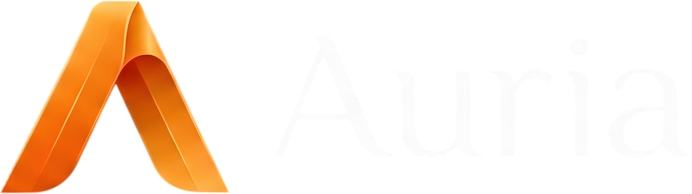

Cronograma da Obra
carregando…
OBRA
Gantt
Curva S
Medições
Linhas de base
Importar XML
Excel
Editar
↑
↓
◆
Pavimento: todos
Só atrasadas
Caminho crítico
Ocultar concluídas
Calendário
Colunas ▾
Dia
Semana
Mês
Hoje
Modo edição
— datas, duração, vínculos e nomes editáveis; as fases recalculam e as sucessoras se movem. Nada é gravado até
Salvar
.
Descartar
Salvar
Nenhum cronograma da obra ainda
Importe o cronograma do MS Project (arquivo .xml) ou monte do zero aqui mesmo.
Importar XML do MS Project
Criar do zero
Curva S
avanço físico acumulado, ponderado pela duração das tarefas
Previsto (linha de base ativa)
Previsto (datas atuais)
Realizado (medições)
hoje
Progresso mensal
quanto avançou em cada mês (pontos percentuais)
Medições
histórico de avanço lançado pela obra · a mais recente por data define o % da tarefa
Linhas de base
fotografia das datas do cronograma; a ATIVA é a referência do "previsto" e do atraso
Salvar nova linha de base